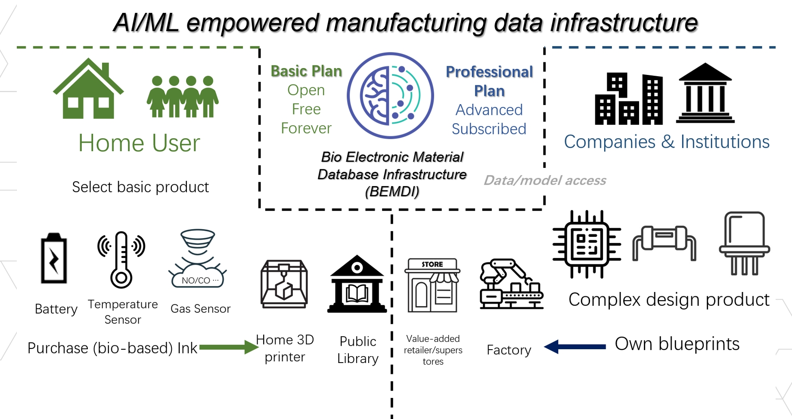

The electronic and lithium-ion battery (LIB) sectors are pivotal for modern society, yet they pose significant environmental challenges due to carbon emissions and non-recyclable waste. Presently, the centralized synthesis and assembly of most electronic devices and batteries make them susceptible to supply chain disruptions, leading to cost and efficiency fluctuations. A promising alternative is transitioning from silicon-based materials to renewable bio-mass derived from plants. Utilizing natural components like lignin and cellulose, we can produce nano-sized graphene and cellulose inks. With advanced 3D inkjet printing, we can fabricate diverse electronic devices, from field effect transistors (FET) to LIBs and sensors, in a decentralized manner, significantly reducing carbon footprints.
Drawing from my prior experience in applying machine learning for the efficient prediction and design of electrocatalysts, devices, and components in Proton-Exchange Membrane Fuel Cells (PEMFC) and Proton-Exchange Membrane Water Electrolyzers (PEMWEs), I’ve recognized the immense potential of integrating experimental data, data science, and theoretical simulation like Density Functional Theory (DFT) for optimal results. This holistic approach has not only enhanced the performance and efficiency of these systems but has also paved the way for innovative solutions in the electronic sector.
These high-value products can also integrate seamlessly into previous stages; for instance, sensors can optimize plant growth conditions, enhancing their utility as material resources. This green approach could redefine the future of electronics. The evolution of this pathway can be accelerated by machine learning (ML) and artificial intelligence (AI). By training ML models on data from each loop stage, we can offer precise experimental guidance. The ultimate goal is to establish an open-source, AI/ML-powered platform, the Biodegradable Electronic Manufacturing Data Infrastructure (BEMDI), to democratize the production of eco-friendly, customizable electronic devices. Additionally, the data generated will be integrated into existing material databases and manufacturing platform, facilitating knowledge transfer for future endeavors. Besides, I am also interested and experienced in leveraging large language models for scientific data mining. And another research interest of mine is automation experimental systems in laboratory driven by AI backend that would allow autonomous materials and device discovery.